This talk was built with AI.
So was this book.
Noel Robert · Physical Sciences · Reddam House Durbanville
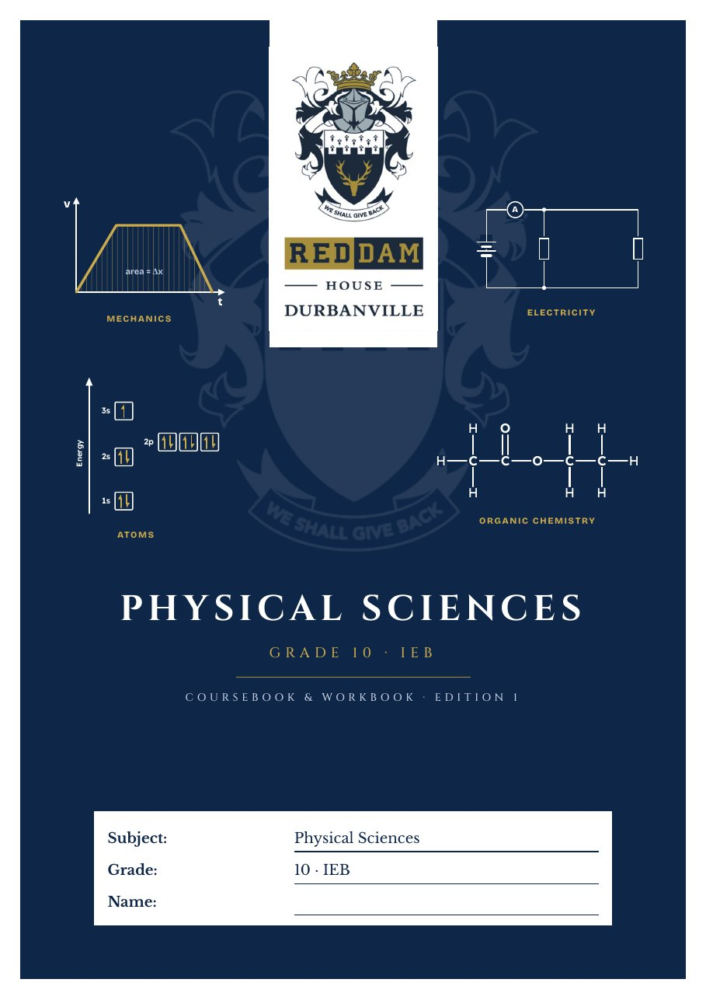
Predict first
Inside the book
Every school day
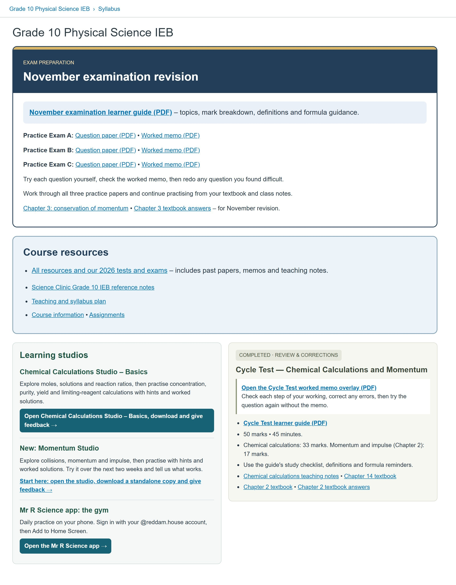
Same Canvas, same starting point
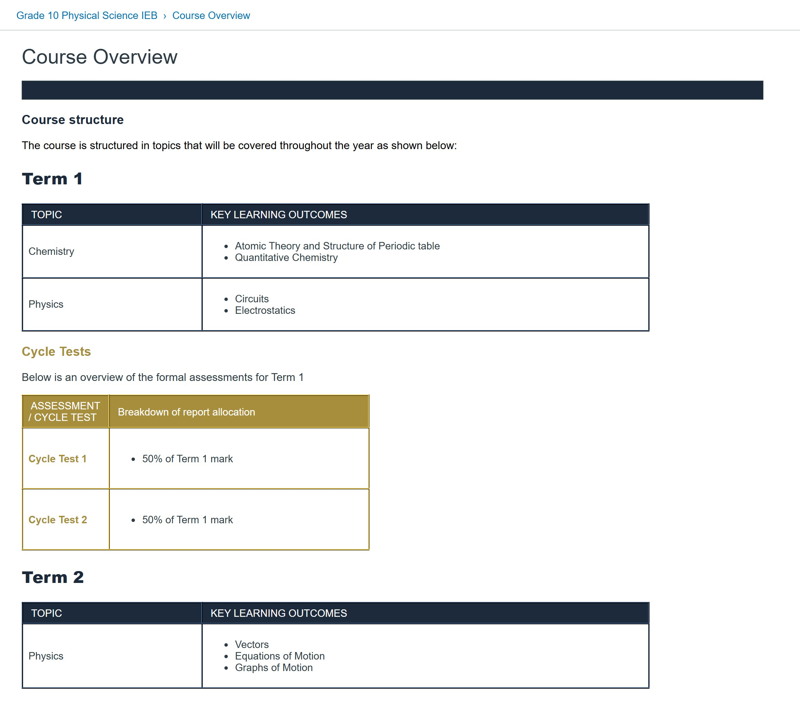
The group template: the Course Overview page every course starts with
Built on it: my Grade 10 home page, with AI doing the building
Today's map
Act 1 · My journey
Act 1 · The foundation, unpacked
In a normal chat, the AI forgets everything when the chat ends. The foundation is how I make it remember, and how I make sure my work is mine.
"None of this is technical for me. I asked the AI to set it up, and I only clicked Allow when it asked."
AllowAct 1 · In my own words
Act 1 · Mistakes
| What went wrong | What I do now |
|---|---|
| One giant chat for a whole book: it compacted and lost my first prompts | One job per thread, and files on disk, not chat history |
| My rules lived in three places, so every project reinvented the cover | One hub rules file that every session reads first |
| Learner names and marks went into a chat | Learner numbers only; marks stay in Drive (POPIA) |
| Two GitHub accounts and two AIs on the same files | One account, one main builder, one shared rules file |
| Simple jobs on maximum effort, which burned my limit | Ask first which model and effort the job needs |
Act 2 · The lens
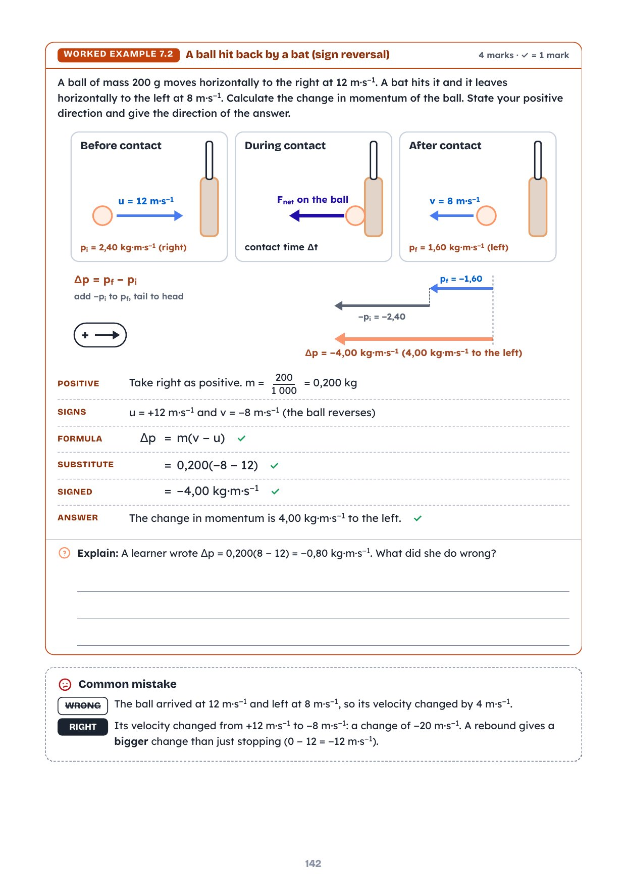
Act 2 · The lens
Act 2 · The one test
Act 2 · The learning sequence
Act 2 · Matching pages
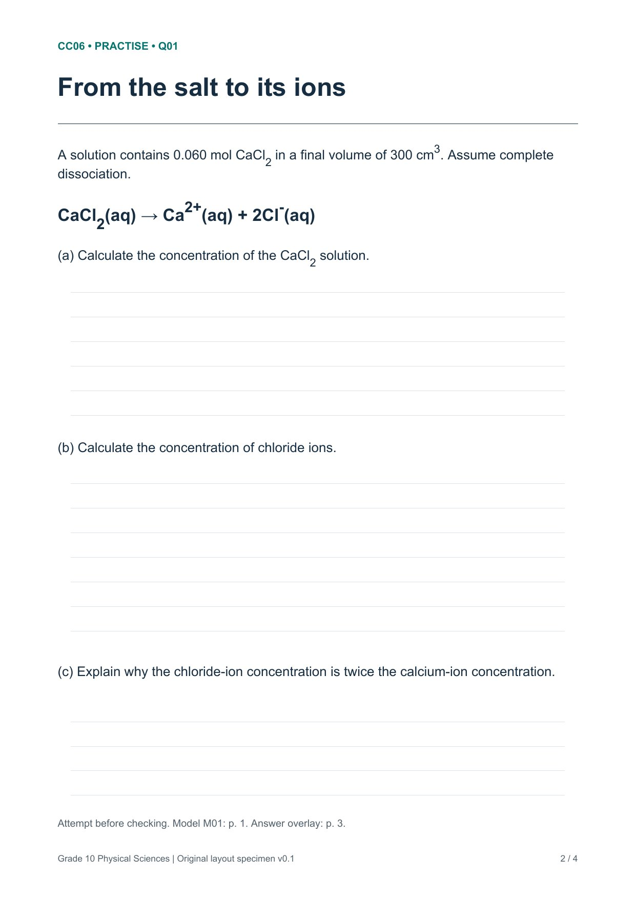
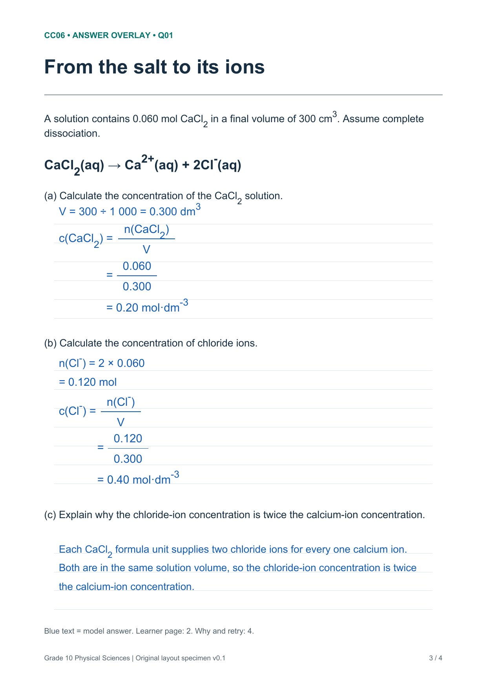
Act 2 · Print and design lens
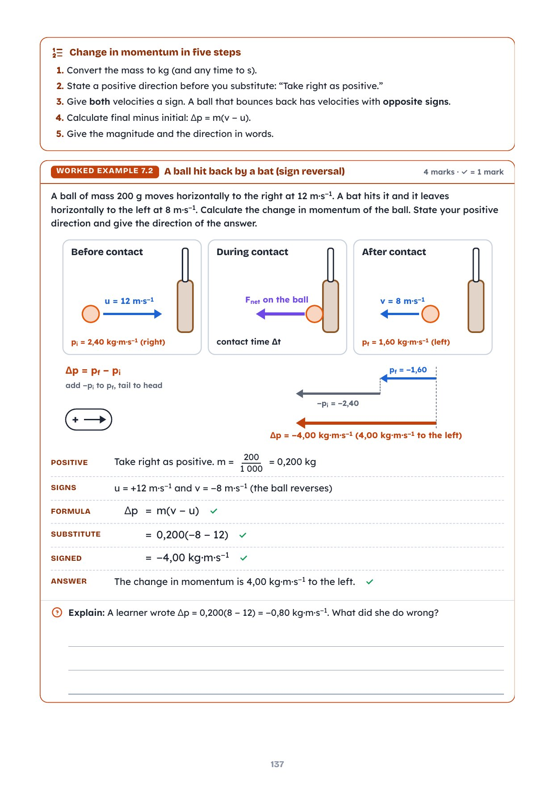
Act 2 · Bridge to act 5
SKILL.md) plus a hub rules file (CLAUDE.md), loaded automatically in every Claude Code session and versioned in Git.Act 3 · The map
Act 3 · The system
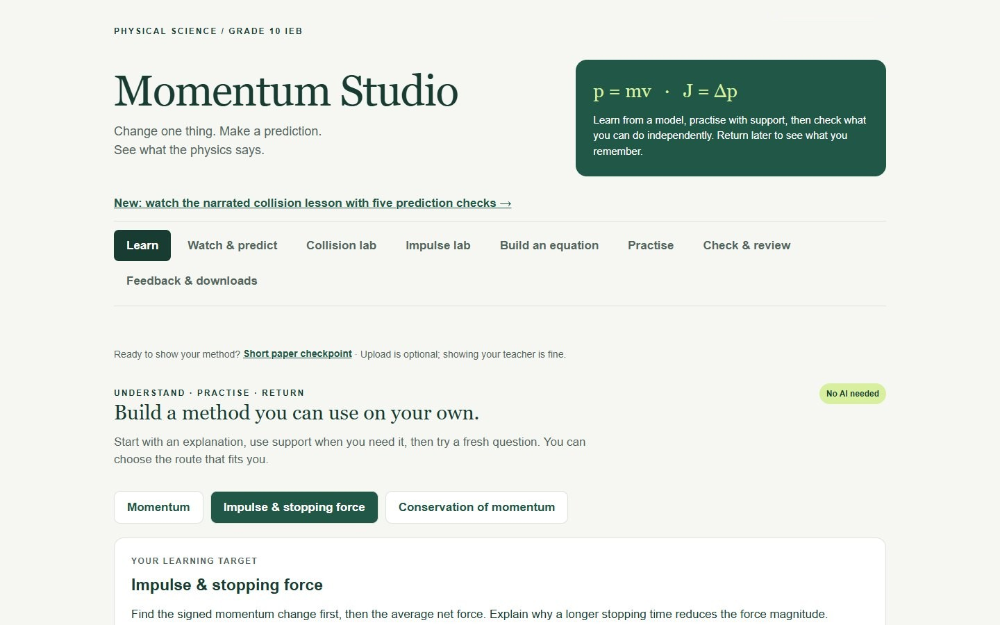
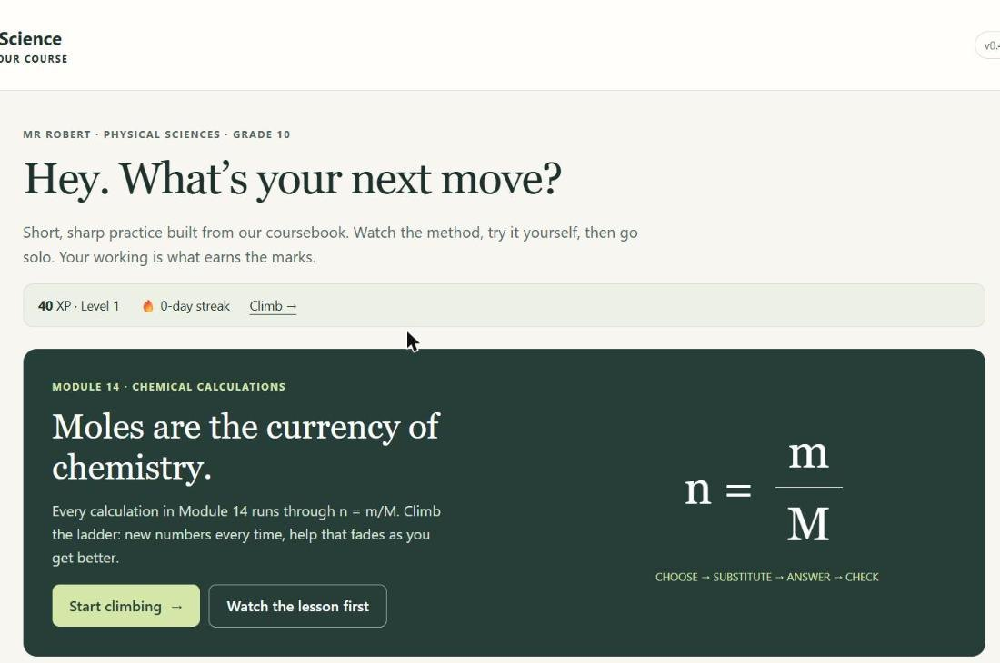
Built to make pupils think. Works without AI. The teacher stays in control.
Act 3 · The classroom: learning studios
Momentum Studio, with a crash simulation
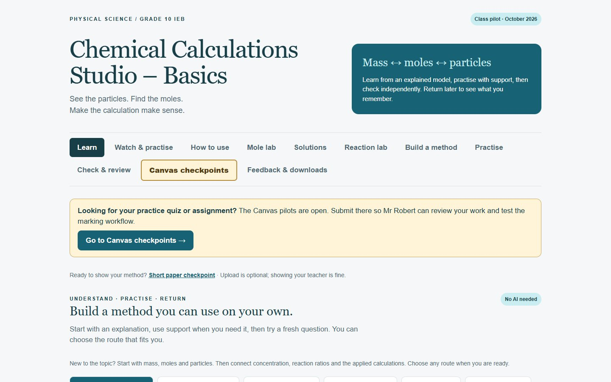
offline copyChemical Calculations Studio: mass ↔ moles ↔ particles
Act 3 · Video inside the studio
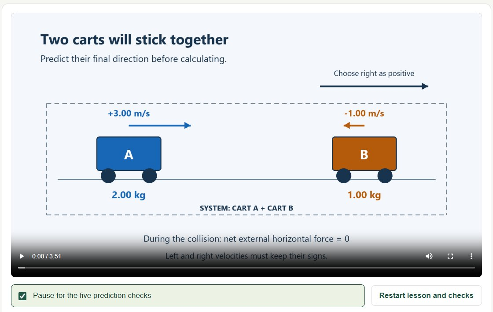
Act 3 · The gym: the Mr R Science app
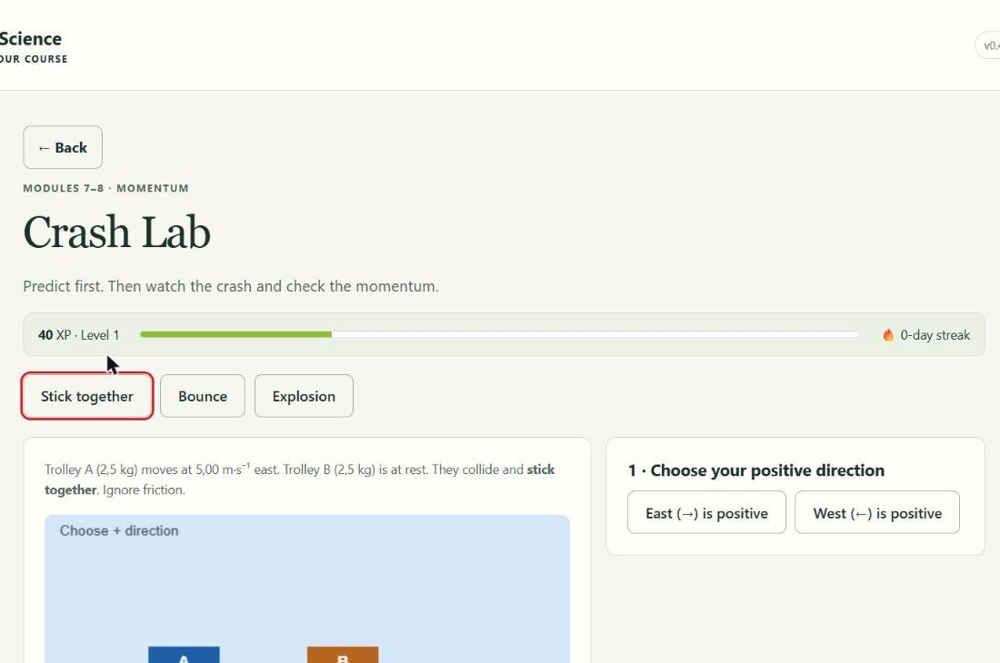
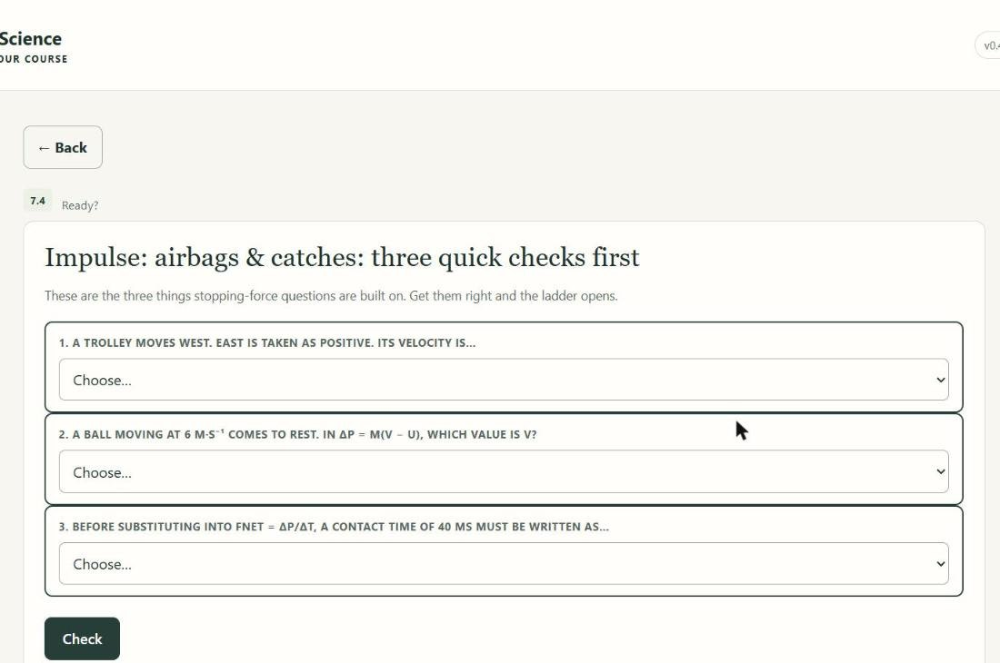
Act 3 · Beyond the classroom: the marks dashboard DEMO COPY · invented data
Act 3 · Beyond the classroom: the staff app DEMO COPY · invented data
Act 3 · Same month, same method
Act 3 · 28 October
My job that day: answer questions and approve each plan. Same day: the first usage-limit stop.
Act 3 · The big builds
Act 4 · AI on my computer
Sources are read only. A Gmail message is only ever a draft: I press send.
Act 4 · Watch it happen ILLUSTRATION
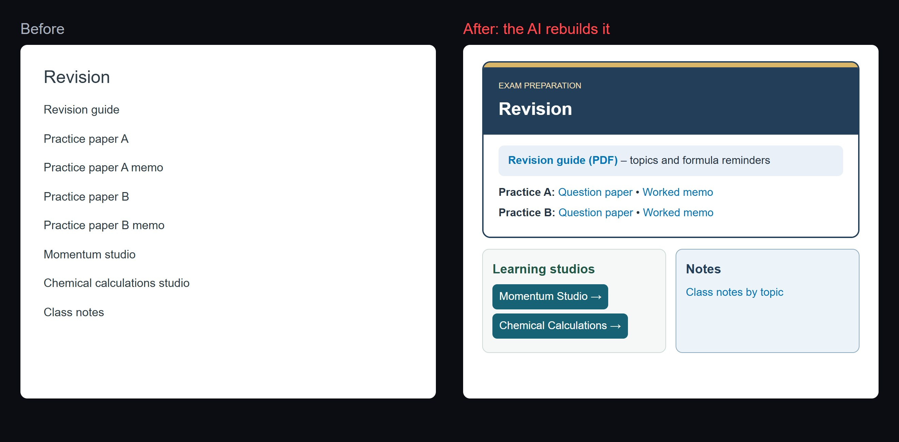
Same content, same links. I describe the layout; the AI writes the page; I approve it before pupils see it.
Act 4 · Quizzes and marking DEMO PUPILS · invented
| Pupil A | 14/15 |
| Pupil B | 11/15 |
| Pupil C | 9/15 |
Pupil work and marks stay in the school's own systems (Canvas, school Google). Nothing identifiable goes into an AI chat.
Act 4 · Workload ILLUSTRATION
| Job | Before | Now |
|---|---|---|
| Set up Canvas pages | By hand, page by page | AI builds; I approve the look |
| Copy papers, memos and notes | Download, rename, upload | AI fetches and sorts them |
| Build quizzes | Type every question | AI drafts from the answer book; I check |
| Mark and capture | Mark, then type marks in | Canvas marks; I check and release |
Act 4 · Remote control
Plan in the cloud. Build on my computer.
Act 4 · An honest comparison (my experience, Nov 2026)
Act 5 · The plumbing
Anything that must survive the session belongs in a file, not a chat.
Act 5 · The layers
Curate the toolbox: switch off what you don't teach with. Fewer irrelevant skills, better picks.
Act 5 · Settings
Before every job, the AI recommends the settings and waits for my "go".
Act 5 · Ownership
If I move schools, my work moves with me.
Act 5 · Data boundaries
| Rule | How it's enforced |
|---|---|
| No names, ID numbers or emails in chats or public pages | Written into the hub rules file every session reads |
| Mark analysis uses learner numbers only | Marks files stay in Drive; the AI reads exports, never edits |
| Anything that collects learner data | Runs in the school's own Google Workspace, with approval |
| Passwords and sending | Never stored; email is drafted, a human sends |
Act 6 · What the research warns
The tutor's guardrails largely prevented the harm. Nearly 1,000 high-school maths students (Bastani et al., PNAS 2025).
Act 6 · Keeping pupils thinking
Act 6 · The coach ILLUSTRATION
Act 6 · AI in Canvas and the suites
Act 6 · Across Inspired schools
Act 7 · How this deck was built
Act 7 · The proof
I decided what good looks like. The AI did the rest.
Act 8 · Start tomorrow
Then pick your toolbox: switch on the education skills, switch off what you don't teach with. From then on, every job begins with "Read my hub first."
Act 8 · Start tomorrow
Connect only what you need. Keep learner data out.
Act 8 · Everything in one place
Act 8 · The guide and this talk
| In this talk | The guide goes deeper |
|---|---|
| Act 1 · Journey, mistakes, the foundation | p. 3 journey · pp. 5–6 mistakes · p. 7 start here |
| Act 2 · The lens | pp. 4–5 the expert's lens and the plumbing |
| Act 4 · AI on my computer, remote control | pp. 8–9 let Claude do the technical work · pp. 11–12 where to work · pp. 12–14 ChatGPT or Claude |
| Act 5 · Settings, ownership, privacy | p. 10 model, effort, Ultracode · pp. 15–16 keeping your work yours |
| Act 8 · Start tomorrow | p. 7 the five steps · pp. 14–15 recipe and starter prompts · pp. 16–17 cheat sheet |
| Only in the talk | Canvas, the studios, the app and quiz design; the research warning; the coach; the group toolbox |
Appendix A · The guide: From chatbot to co-worker
Appendix B · The Teacher Starter Kit